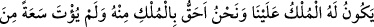
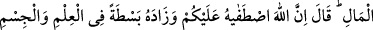
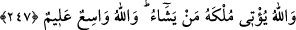

bâtıl ehlinden daha azdır. Nitekim Allah Teâla şöyle buyurmuştur: “Ben cinleri de
insanları da (başka bir hikmete mebnî değil) ancak bana kulluk etsinler diye
yarattım.” (ez-Zâriyât, 51/56) Zira kullukta en büyük gaye, insan-ı kâmildir. Ya da
sayıca az olsalar bile, fazîlet ve şeref bakımından yüksek olan hidayet rehberleridir.
İnsân-ı kâmil Hz. Peygamberle gerçekleşmiştir. Nitekim bu hususla ilgili olarak şöyle
denilmiştir: Hidayet rehberleri sayıca az, güç kuvvet bakımından ise çokturlar. Yâni
onlar kemmiyet bakımından az olsalar da, keyfiyet itibârı ile çokturlar.
İbn Mes’ûd (r.a.)’dan rivâyet olunmuştur ki: Hak ve hikmet üzere olan tek kişi yerine
göre büyük bir topluluk gibidir. Çünkü herkesin ihlâs ve Allah’a tam yöneliş üzere
ittifak halinde bulunması zordur. Zira bu hâl, umûmî dünya nizâmını alt üst eder. Bu
yüzden şöyle denilmiştir: Allah’ın ahmak kulları olmasaydı, dünyâ harâp olurdu.
Bilakis hikmet şunu gerektirir: Hakk’ın her iki elinin durumlarına uygun izâfe edilecek
şeyler vardır. Birincisine izâfe edilecek şey, rahmet, cennet ve her türlü seadettir.
Diğerine ise izâfe edilecek şey kahır ile gadab ve gerekleridir. Gadab, şimal adı verilen
ele ait makamın kemal noktasıdır. İki elden yemin adıyla anılan diğeri ise cemâle
mazhar ve mübarektir. Bu iki elden herbirinin hükümleri birbirinin zıddıdır. O halde
akıllı insan gadap sebeplerinden sakınmalı ve Rabbın keremine nâil olmak için
çalışmalıdır.
Hz. Ali şöyle buyurmuştur: “Kim, cehd etmeden Allah’a kavuşacağını zannederse o,
boşuna temennilerde bulunmuştur. Kim de cehdini tam sarfettiğini zannederse o da
kendini meşakkate sokmuş demektir.”
Allah’ım! Fazl ü kereminden üzerimize bol bol saç ve bizi, senin vâsıtanla sana
kavuştur ya Erhamerrâhimîn!
247. Peygamberleri onlara: Bilin ki Allah, Tâlût’u size hükümdar olarak
gönderdi, dedi. Bunun üzerine: Biz, hükümdarlığa daha lâyık olduğumuz halde,
kendisine servet ve zenginlik yönünde geniş imkânlar verilmemişken o bize nasıl
hükümdar olur? dediler. “Allah sizin üzerinize onu seçti, ilimde ve bedende ona
üstünlük verdi. Allah mülkünü dilediğine verir. Allah her şeyi ihâta eden ve her
şeyi bilendir” dedi.
İşmûîl, İsrâîloğulları’na: “Bilin ki Allah, Tâlût’u size hükümdar gönderdi. Ona itâat
ediniz ve onunla beraber düşmanlarınıza karşı savaşınız.” dedi. Onlar: “O bizim
üzerimize nasıl hükümdar olabilir?” dediler, taaccub edip kabullenmek istemediler.